Vaaradhi already makes natural, healthy food easy to buy. This conversation is about the next step: making the repeat purchase effortless, so regular customers keep coming back without having to start over each time.
Walk-in shopping in Manikonda, Hyderabad.
Address listed on vaaradhifarms.comIts own online store for packaged staples: honey, ghee, oils, pickles, millets and snacks, with customer login and order tracking.
Website, checked 15 Nov 2026A click-to-order page with 192 listed items in 18 categories, alongside ordering on WhatsApp, with same-day delivery.
Ordering page (EkSecond), captured 28 Oct 2026Orders through the delivery apps, within their delivery areas.
From our conversations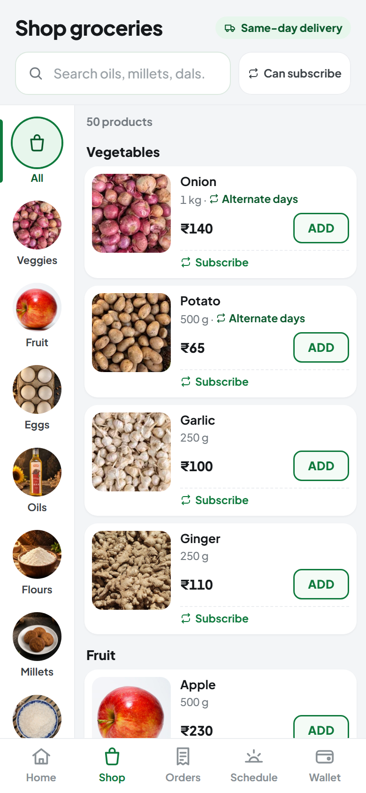
The store, website, ordering page, WhatsApp, Swiggy and Zomato carry on unchanged.
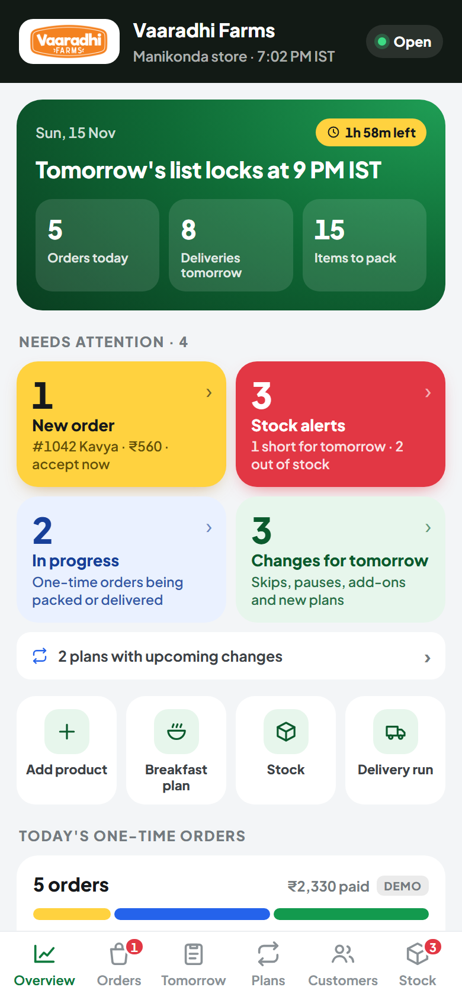
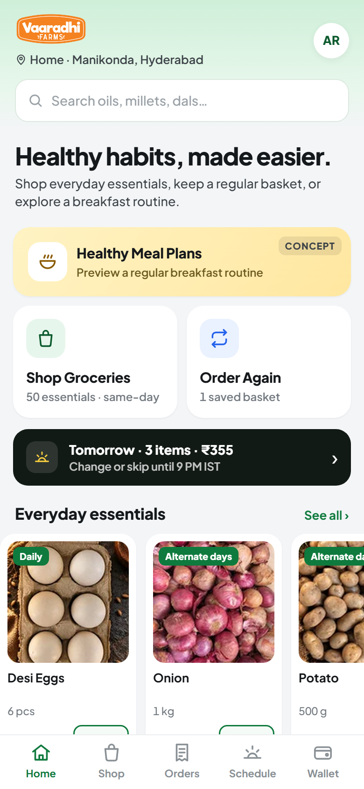
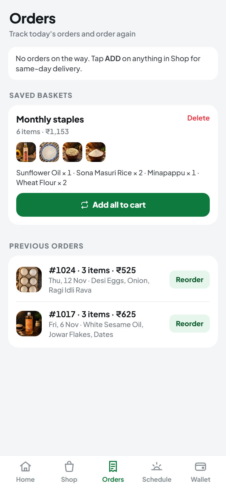
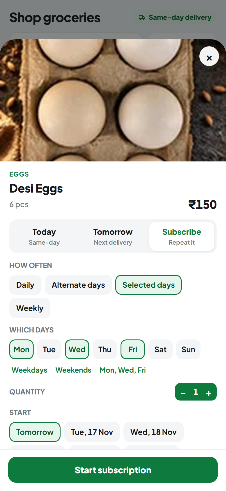
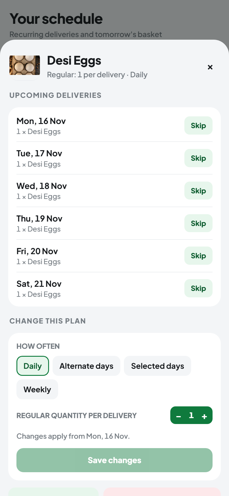
In the demo, customers can share preferred days, servings and a delivery or pickup preference. It is an expression of interest only: no order, no payment and no commitment from Vaaradhi. Once Vaaradhi confirms a menu and price, it can put a plan on sale itself from Plans → Breakfast plans.
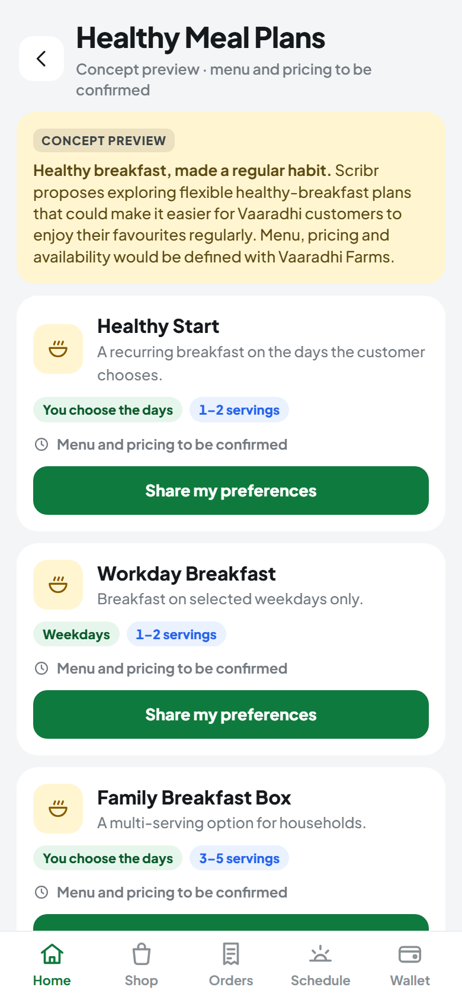
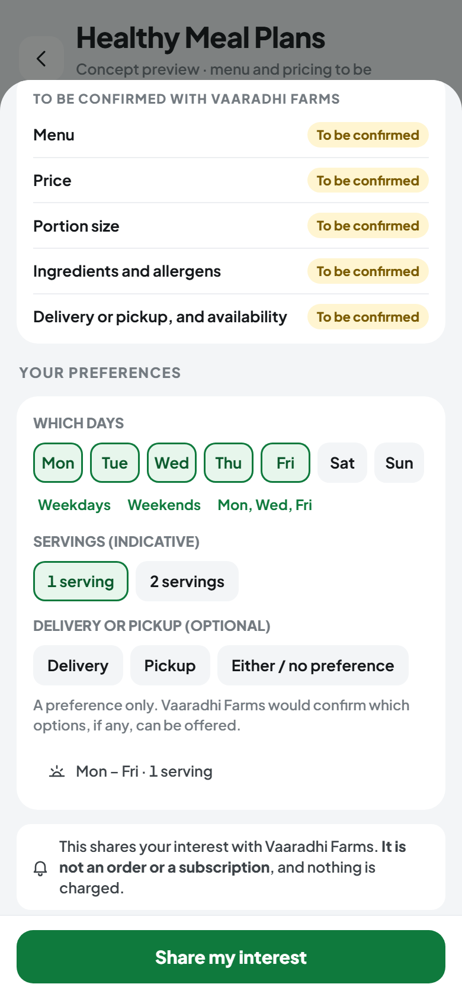
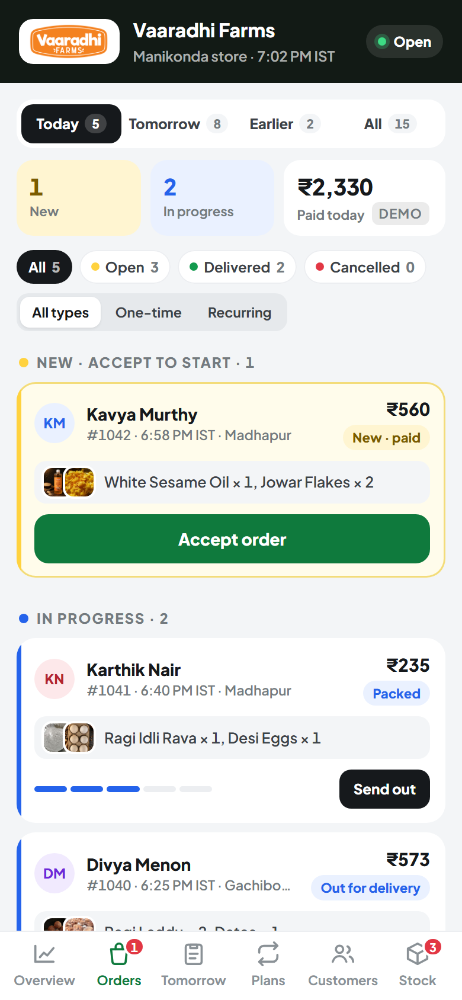
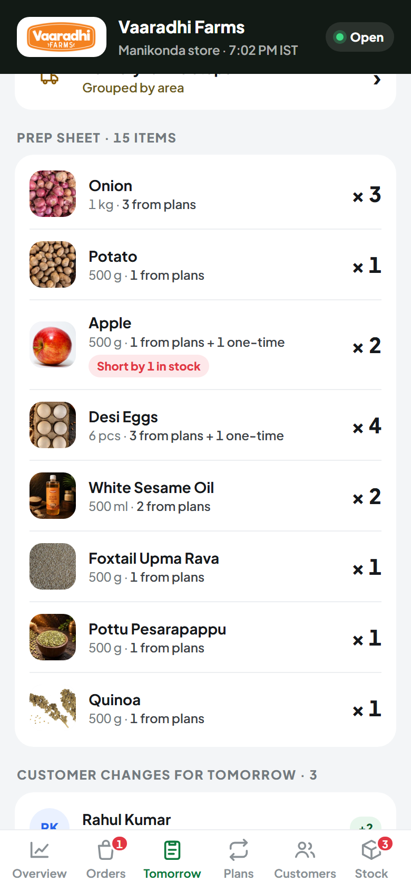
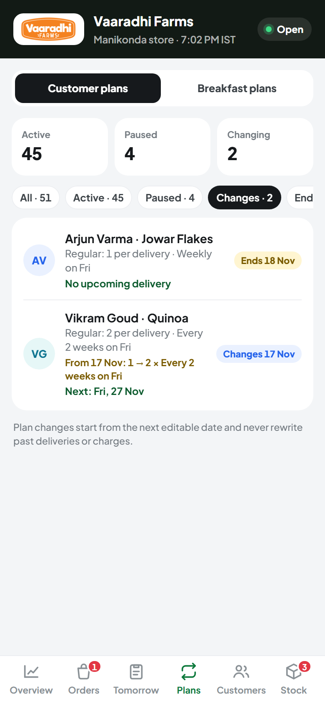
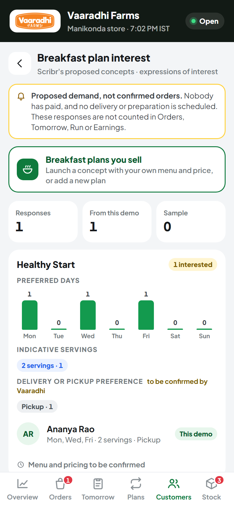
Illustrative starting point: a proposal, not a forecast or a commitment. Subject to operational feasibility and commercial terms agreed with Vaaradhi.
We'd agree the measures and a baseline from today's operations before the pilot starts, so the review is about evidence rather than opinion.
Could we explore a small pilot to see whether recurring healthy-breakfast orders and easier repeat purchases are valuable for Vaaradhi?